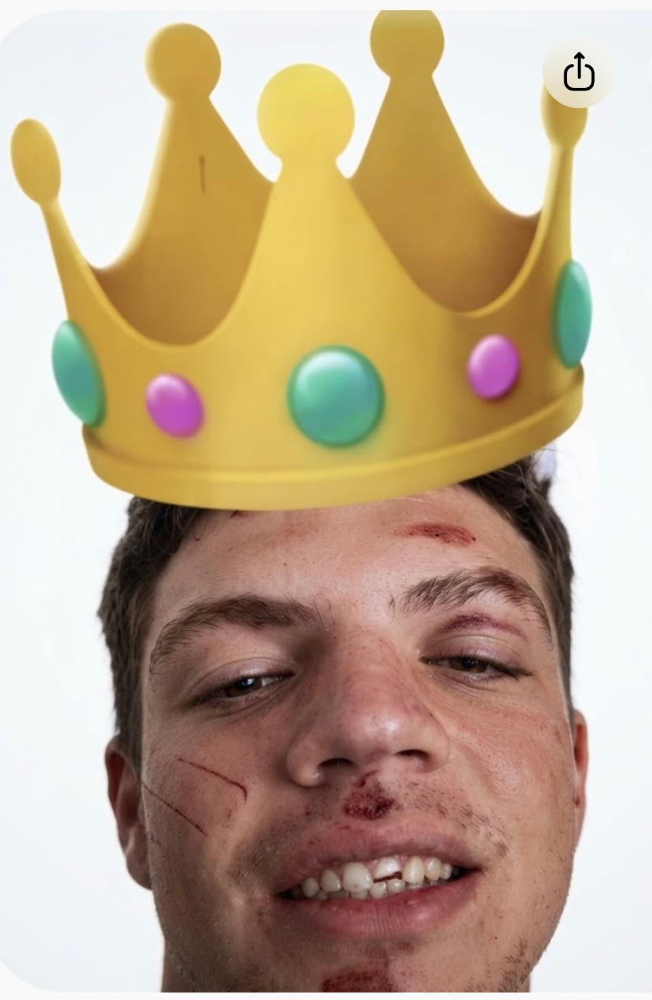

Riky

Fino ai 18 anni non aveva toccato una goccia di alcol.
Dopo i 18 anni ha deciso che doveva recuperare tutto quello che ha perso, e siamo sicuri che anche qui a Monaco darà spettacolo.
Sperando che non faccia come a Valencia, dove abbiamo messo su una task force per ritrovarlo
dopo che ha vagato da solo per tutta la città alle 3 di notte.